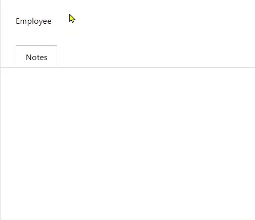

Looking for a skilled and reliable Odoo Developer to bring your business ideas to life? or to fix things? or to analyze unwanted results? or to do whatever in odoo
Let’s build something great together! I specialize in custom module development, ERP implementation, and performance tuning tailored to your needs.
This module enhances the search behavior of many2x fields in Odoo by introducing a pattern-based
search mechanism. Instead of relying solely on the default ilike search, it allows users to search
by meaningful fragments of the name. This is particularly helpful in cases where records (e.g. employees) share
common prefixes like "Muhammad", enabling quicker and more intuitive access to relevant records.
many2x fields with large datasetscontext="{'pattern_search': True}" to the
many2x field definition.
<field name="employee_id" context="{'pattern_search': True}" />
Once enabled, the field will support pattern matching: typing muhra will match "Muhammad Rajeel",
and rjl will also return similar results even if the full name doesn't begin with it.
Many2x Autocomplete | Compatible with Community, Enterprise and Odoo.sh